Next: 3.4.2 First variation
Up: 3.4 Variational approach to
Previous: 3.4 Variational approach to
Contents
Index
3.4.1 Preliminaries
Consider the optimal control problem from Section 3.3 with
the following additional specifications: the target set is
 , where
, where  is a fixed time
(so this is a fixed-time, free-endpoint problem);
is a fixed time
(so this is a fixed-time, free-endpoint problem);
 (the
control is unconstrained); and the terminal cost is
(the
control is unconstrained); and the terminal cost is  ,
with no direct dependence
on the final time (just for simplicity).
We can rewrite the cost in terms of the fixed final time
as
,
with no direct dependence
on the final time (just for simplicity).
We can rewrite the cost in terms of the fixed final time
as
 |
(3.21) |
Our goal is to derive necessary conditions for optimality.
Let
 be an optimal control, by which we presently
mean that it provides a global minimum:
be an optimal control, by which we presently
mean that it provides a global minimum:
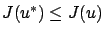
for all piecewise continuous controls  . Let
. Let
 be the corresponding optimal trajectory. We would like to consider nearby trajectories of the familiar form
be the corresponding optimal trajectory. We would like to consider nearby trajectories of the familiar form
 |
(3.22) |
but we must make sure that these perturbed trajectories are still solutions
of the system (3.18), for suitably chosen controls. Unfortunately, the
class of perturbations  that are admissible in this sense
is difficult to characterize if we start with (3.23). Note also
that the cost
that are admissible in this sense
is difficult to characterize if we start with (3.23). Note also
that the cost  , whose first variation we will be computing, is a function of
and not of
, whose first variation we will be computing, is a function of
and not of  .
Thus, in the optimal control context it is more natural to directly
perturb the control instead, and then define perturbed state
trajectories in terms of perturbed controls.
To this end, we consider controls of the form
.
Thus, in the optimal control context it is more natural to directly
perturb the control instead, and then define perturbed state
trajectories in terms of perturbed controls.
To this end, we consider controls of the form
where  is a piecewise continuous function from
is a piecewise continuous function from ![$ [t_0,t_1]$](img803.gif) to
to
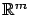
and  is a real parameter as usual. We now want to find (if possible) a
function
is a real parameter as usual. We now want to find (if possible) a
function
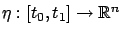
for which the solutions of (3.18) corresponding
to the controls (3.24), for a fixed
, are given by (3.23). Actually, we do not have any reason to believe that the perturbed trajectory depends linearly on
. Thus we should replace (3.23) by the more general (and more realistic) expression
It is obvious that
 since the initial condition does not change.
Next, we derive a differential equation for
. Let us use the more detailed notation
since the initial condition does not change.
Next, we derive a differential equation for
. Let us use the more detailed notation
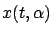
for the solution of (3.18) at time  corresponding to the control (3.24). The function
corresponding to the control (3.24). The function
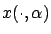
coincides with the right-hand side of (3.25) if and only if
for all
. (We are assuming here that the partial derivative
 exists, but its existence can be shown rigorously; cf. Section 4.2.4.)
Differentiating the quantity (3.26) with respect to time and interchanging the order of partial derivatives, we have
exists, but its existence can be shown rigorously; cf. Section 4.2.4.)
Differentiating the quantity (3.26) with respect to time and interchanging the order of partial derivatives, we have
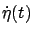 |
 |
|
| |
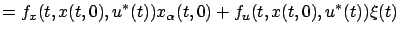 |
|
| |
 |
|
which we write more compactly as
Here and below, we use the shorthand notation
 to indicate that a function is being evaluated along the optimal
trajectory.
The linear time-varying
system (3.27) is nothing but the
linearization of the original system (3.18)
around the optimal trajectory. To emphasize the linearity of the system (3.27) we can
introduce the notation
to indicate that a function is being evaluated along the optimal
trajectory.
The linear time-varying
system (3.27) is nothing but the
linearization of the original system (3.18)
around the optimal trajectory. To emphasize the linearity of the system (3.27) we can
introduce the notation
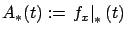
and
 for the matrices appearing in it, bringing it to the form
for the matrices appearing in it, bringing it to the form
 |
(3.27) |
The optimal control  minimizes the cost given by (3.22), and the control system (3.18) can be viewed as imposing the pointwise-in-time (non-integral) constraint
minimizes the cost given by (3.22), and the control system (3.18) can be viewed as imposing the pointwise-in-time (non-integral) constraint
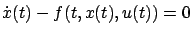
. Motivated by Lagrange's idea for treating
such constraints in calculus of variations, expressed by the augmented cost (2.53) on page ![[*]](crossref.gif) , let us
rewrite our cost as
, let us
rewrite our cost as
for some
 function
function
![$ p:[t_0,t_1]\to\mathbb{R}^n$](img897.gif) to be selected later. Clearly, the
extra term inside the integral does not change the value of the cost. The function
to be selected later. Clearly, the
extra term inside the integral does not change the value of the cost. The function 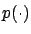
is reminiscent of the Lagrange multiplier function
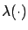
in Section 2.5.2 (the exact relationship between the two
will be clarified in Exercise 3.6
below). As we will see momentarily,  is also closely related to
the momentum from Section 2.4.
We will be working in the Hamiltonian framework,
which is why we continue to use the same symbol
by which we denoted the momentum
earlier (while some other sources prefer
is also closely related to
the momentum from Section 2.4.
We will be working in the Hamiltonian framework,
which is why we continue to use the same symbol
by which we denoted the momentum
earlier (while some other sources prefer
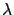
).
We will henceforth use the more explicit notation
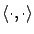
for the inner product in
 . Let us introduce
the Hamiltonian
. Let us introduce
the Hamiltonian
Note that this definition matches our earlier definition of the Hamiltonian in calculus of variations, where we had
 ; we just need to remember that after we changed the notation from calculus of variations to optimal control, the independent variable
became
, the dependent variable
; we just need to remember that after we changed the notation from calculus of variations to optimal control, the independent variable
became
, the dependent variable  became
, its derivative
became
, its derivative  became
became 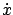
and is given by (3.18),
and the third argument of  is taken to be
rather than
(which with the current definition
of
is taken to be
rather than
(which with the current definition
of  makes even more sense).
We can rewrite the cost in terms of the Hamiltonian as
makes even more sense).
We can rewrite the cost in terms of the Hamiltonian as
 |
(3.29) |
Next: 3.4.2 First variation
Up: 3.4 Variational approach to
Previous: 3.4 Variational approach to
Contents
Index
Daniel
2010-12-20